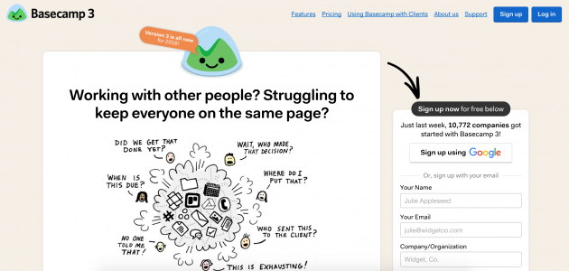

Web design | August 28, 2021
The Gestalt Principles
By Tristan Schmale
What does it mean?
The word “Gestlat” comes from the German.
The official definition is the following: “something such as a structure or experience that, when considered as a whole, has qualities that are more than the total of all its parts”.
The literal translation of “Gestalt” would be "shape" and there is even a verb in German “gestalten”, which means “to shape sth”.
A little bit of History
The Gestalt principles come from three German psychologists who wanted in the 1920s to understand our perception while looking at grouped elements, objects and images. To simplify, "the natural compulsion to find order in disorder”.
If you look at the image below, you will see something. If you look closer, you will see something else. Well, it is only a matter of perception.
How does it apply to web design?
For obvious reason these psychology principles are widely used to design websites and to shape elements as every web designer has to ask himself "How will my website be perceived?"
Listed below are the seven principles:
1. Perception
When we instinctively perceive objects as either figure (the focal point) or ground (background).
2. Similarity
When we see elements that share characteristics as more related than those that do not.
3. Proximity
When we see objects that are close to each other as more related than objects that are far apart.
4. Common region
When you see elements as part of a group if they are enclosed within the same region.

5. Continuity
When we see elements that are on a line or curve as more related than elements that are not on the line or curve.

6. Closure
When we see a complex arrangement, we look for a single, recognizable pattern.

7. Focal point
Focal points are points of interest, emphasis, or difference capture and hold our attention.

Conclusion
These principles explain how we perceive visual information. It is important to apprehend them to build web designs, to organise the elements in order to meet the users needs. Of course, the Gestalt Principles are only a tool, the rest is up to you!